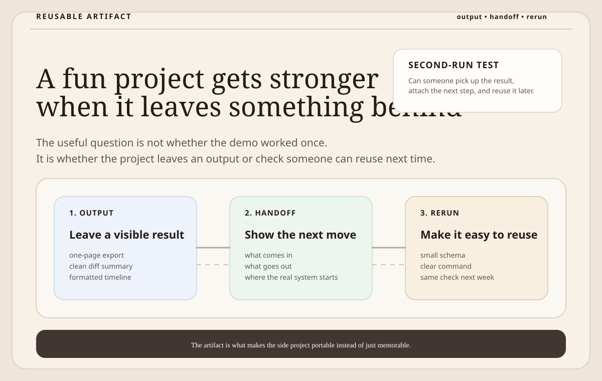

Fun Projects Get Stronger When They Leave a Reusable Artifact
A small side project gets more useful when it leaves behind a clear output, handoff, or rerun path that someone can carry into real work.
I like fun projects, but the ones I keep respecting are usually the ones that leave something behind. Not just a clever demo. Not just a proof that I can code a thing on a weekend.
Something reusable. That might be a stable output shape, a visible handoff contract, or a tiny check you can rerun the next time the same problem shows up.
Novelty is not enough
There is nothing wrong with building something because it seems fun. That is often the fastest way to test product taste. But if the project stops being interesting the moment the first demo is over, it usually means I built a moment, not a tool.
The small projects I keep coming back to usually earn that second look because they leave one of these behind:
- an output someone can drop into the next step
- a contract that makes the boundary of the workflow obvious
- a rerunnable check that helps the same problem stay solved
That is a better bar than whether the idea sounded clever on day one.
The artifact is what makes the project reusable
one-page-canvas leaves behind a one-page planning artifact you can export and reuse. tiny-deck-linter leaves behind a review pass you can rerun before the next meeting. release-note-diff-cli leaves behind a tighter change summary instead of forcing another full skim.
Those projects do different jobs, but the useful part is similar. Each one produces something that can travel into the next step of the work. That is usually when a side project stops feeling like a toy.

The handoff matters more than the implementation story
I do not think small projects need a giant platform thesis around them. I do think they need a visible handoff. If someone lands on the repo, they should be able to tell:
- what the project takes in
- what it gives back
- where a real team would attach the next step
That clarity matters more than whether the implementation is impressive.
Why I keep liking this standard
This is probably why I keep preferring narrow public tools over larger vague demos. Small repos force the question pretty quickly: what exactly stays useful after the first run. If the answer is clear, the project usually has a reason to exist.
If the answer is fuzzy, it is probably still just an experiment.